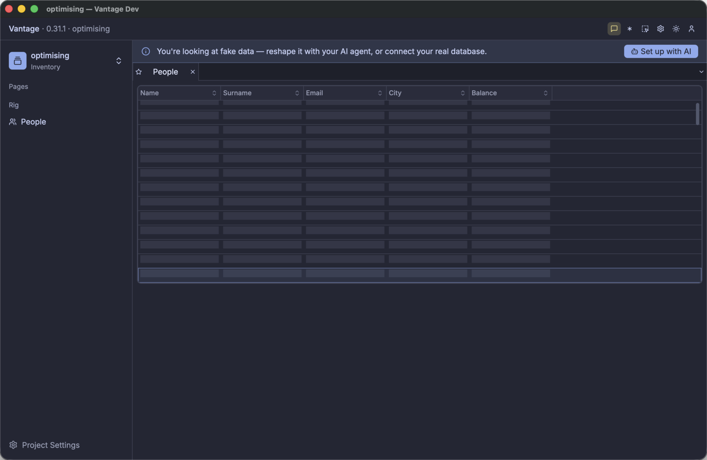

Reading the Debug Stream
The first thing that you learn from the stream is which line agrees with which moment on screen. Keep the window and the terminal beside each other. Sort a column, type in the quick-search box, and scroll, and watch which lines each action produces.
That is much easier when each request needs three seconds than when it needs 40 milliseconds.
Make the source slow
A source that answers in 40ms hides its behaviour. The rows are simply present, and a load is one flicker between two frames.
Change one value in the datasource. Each fetch then becomes an event with a start and an end.
# datasource/people.yaml
shape:
capabilities: [count, fetch_window, order, search]
latency:
window: 3s # each batch of rows costs three seconds
get: 500ms..1s # each single record costs half a second or more
The two classes pay for different requests:
| Latency class | The request that pays it | What causes it on screen |
|---|---|---|
window | A range of rows, such as rows 500 to 600 | The grid scrolls into rows that the cache does not hold |
get | One record, by its id | A click on a row, which opens the details panel |
window is the class that this chapter measures. A grid asks for ranges, and each unnecessary range
is a fetch that you can count. Give get a value as well, so that a click on a row is also visible
in the stream.
Nothing else changes: the same table, the same page, and the same 200,000 rows. But each decision of the framework now takes clock time that you can see.

Open the page and watch it load:
- The window opens immediately, and the page then needs a few seconds to mount. That delay is the
fixture, not the framework:
count: 200000makes faker generate 200,000 rows at each start. Decreasecountif you do not want it. - Skeleton rows appear. A skeleton row has a position, but no contents. The grid gave a position
to each of the 200,000 rows, because the source declared
count, so the scrollbar has the correct size before any row arrives. - The first batch arrives three seconds later, and those rows paint together.
- Scroll past them. The same sequence occurs again.
Now scroll back to the top. Nothing happens. There is no delay and there are no skeleton rows. That is the cache, and it is your first measurement: to return to a position that you visited costs nothing.
Cold runs and warm runs
There is one cache file for each datasource, under ~/Library/Caches/Vantage/<project>-<hash>/.
Delete the folder for a cold run:
rm -rf ~/Library/Caches/Vantage/optimising-*
A cold run and a warm run are two different experiments. A cold run answers “what does the first open cost?”. A warm run starts from a full cache and answers “what does the application do with rows that it already holds?”. Too many refreshes appear in the warm run.
The two sets of numbers are not comparable. Record which run you did, each time.
Understanding the log
The debug stream shares the terminal with the ordinary log of the application:
12:23:58.222 people dio created over "people" — cache table "people_people", 422 rows already held from a previous session
2026-07-31T11:23:58.242796Z INFO build_page_for_key{page_key="people" …}:build_entity{key="people"
datasource=Some("people")}: vantage_ui: entity open, by phase key=people/people ms=2791
breakdown=vista=2722ms cache=49ms dio=0ms scenery=18ms
12:23:58.341 people dio fetch #1 asks for rows 0..22 — 0 missing, 22 already held
12:23:58.420 people dio fetch #1 got 22 rows in 79ms
The short lines are the debug stream. Each one has four parts, always in this sequence:
| Part | Example | What it is |
|---|---|---|
| time | 12:23:58.341 | Local time, to the millisecond |
| table | people | The datasource with debug switched on. With one datasource for each table, this is also the table. |
| origin | dio | The part of the framework that wrote the line |
| message | fetch #1 asks for rows 0..22 … | One sentence, in units that a person reads: 3.0s, 24KB, 200,000, 0.1% |
Each request has an identifier, such as fetch #1. The identifier connects a request to its result.
There is one sequence for each Dio, and it starts at 1.
The lines from one load do not always appear in the same sequence. The framework writes the cache line and the state line inside the operation that the result line completes. Both can therefore come before the result line.
Use fetch #N to connect the lines. Do not use their positions.
The origin is what you search for. There are twelve origins:
| Origin | What the line reports |
|---|---|
dio | The framework created a Dio. Or a fetch asks for a range, got rows, or failed. |
source | What the source can do and cannot do, and which load method follows. One line, at open. |
scenery | A view opened with a full or an empty cache. Or the load state changed. |
census | A consumer attached or detached. Consumers are table sceneries, record sceneries, and servos, which watch one value. The line gives the current counts and the memory. |
viewport | The range that a consumer declared. Coalesced means that several scroll events became one range. |
cache | The framework wrote rows. Or it served a viewport locally, with no fetch. |
payload | The columns that arrived, the columns that a view wants, and the size in bytes. |
total | The total count changed, and what supplied the new value. |
sort | A sort changed. Says whether the source does the work. |
search | A search changed. Says whether the source does the work. |
hydrate | A second pass fetched the remaining columns of rows that are on screen. Section 4 explains the two passes. |
summary | The session summary, printed when Vantage UI quits. |
Read one origin at a time
Write the session to a file, then read one origin:
vantage-ui ./optimising --page=people 2>&1 | tee /tmp/optimising.log
grep ' dio ' /tmp/optimising.log
12:23:58.222 people dio created over "people" — cache table "people_people", 422 rows already held from a previous session
12:23:58.341 people dio fetch #1 asks for rows 0..22 — 0 missing, 22 already held
12:23:58.420 people dio fetch #1 got 22 rows in 79ms
12:24:11.295 people dio fetch #2 asks for rows 316..339 — 23 missing, 0 already held · sorted by city Desc
12:24:16.842 people dio fetch #2 got 23 rows in 5.5s ⚠ slow
Five lines report a whole session:
- The cache was warm: 422 rows from an earlier run. A cold start says nothing held yet here.
fetch #1asked for 22 rows that the cache already held. A warm start still asks the source for the window on screen, to check that the held rows are current.- Between
12:23:58.420and12:24:11.295there is no line. Thirteen seconds of use cost no request. fetch #2carriessorted by city Desc. The sort went to the source, and the source applied it to all 200,000 rows, and not to the rows that the cache held.- That sorted request cost 5.5s. ⚠ slow marks each request of one second or more.
Read the other origins in the same way:
grep ' cache ' /tmp/optimising.log # what the cache wrote, and what it served
grep 'served locally' /tmp/optimising.log # the viewports that cost nothing
grep -E 'asks for|got ' /tmp/optimising.log # the network, and nothing else
Scroll while you watch tail -f on the file. Each three-second delay must have one asks for line
and one got line. Each immediate repaint must have a served locally line, or no line.
A delay with no request is a fault in the UI. A request with no delay is a request that you did not need.
A full cold open
This is the output of the optimising project, with high latency and an empty cache, when the
People page opens. It is a capture, not an example.
21:20:15.397 people dio created over "people" — cache table "people_people", nothing held yet
21:20:15.399 people source can count, window, order, search · pages lazily, 100 rows at a time
21:20:15.401 people scenery opened cold — 0 rows seeded from cache
21:20:15.401 people census +1 table scenery — now 1 table, 0 record, 0 servo · rss 313MB
21:20:15.455 people viewport rows 0..200 — 2 scroll events coalesced into one
21:20:15.455 people dio fetch #1 asks for rows 0..200 — 200 missing, 0 already held
21:20:18.493 people cache +200 new, 0 updated — now holding 200 of 200,000 (0.1%)
21:20:18.494 people scenery opening → partial (chunk load succeeded)
21:20:18.494 people dio fetch #1 got 200 rows in 3.0s ⚠ slow
21:20:18.494 people payload 6 columns received · no view declared what it needs, so all were
fetched · 23KB · id,name,surname,email,city,balance
21:20:18.494 people total 200,000 rows — stated by the source in the same response
21:20:18.551 people cache all 13 rows of 0..13 served locally — no fetch
The framework creates the Dio before any view can use it, and its cache table is empty. That is the
cold start. The source line gives the contract that each following line obeys.
The binder declares a viewport of 200 rows, and not the 13 rows that you can see. The loader reads ahead of the screen, so that the next scroll costs nothing. Section 4 measures this.
The source line says 100 rows for each page, and the first fetch asks for 200. The first fetch
covers the opening viewport, which the binder sets to 200 rows. Later fetches use the page size of
100.
Then the delay: from .455 to 18.493, three seconds. Four facts then arrive together:
- the cache holds the rows — 200 of 200,000, which is 0.1%
- the view is no longer in the loading state
- the fetch reports its cost
- the total is known, because the source supplied it in the same response
The last line is the result: the grid painted 13 rows and made no fetch.
Now scroll. Most of the output is that same line:
21:20:20.401 people viewport rows 29..43 — 5 scroll events coalesced into one
21:20:20.401 people cache all 14 rows of 29..43 served locally — no fetch
The summary at the end
When you quit, the framework prints the summary of the session:
21:20:33.374 — diorama session summary —
21:20:33.374 people summary 3 fetches, 0 repeats · 400 rows, 0 redundant · 9.1s waiting, 3.0s slowest
21:20:33.374 summary 1 dio, 1 table scenery, 0 record, 0 servo still alive
21:20:33.374 summary session 18.0s · cpu 15.0s · peak rss 352MB
Two numbers in the first line are important. The other sections keep both at zero.
repeatsis the count of ranges that the application fetched more than one time.redundantis the count of rows that arrived when the cache already held them. A warm revalidation gives a small number. A number equal to the count of rows that arrived means that the application fetched a full page for nothing.
The second line finds leaks. Close a page, and the counts must decrease. If the count of sceneries increases while you move between pages, something keeps views alive after their page closed.
What we covered
| Item | What it does |
|---|---|
latency.window: 3s | Separates the events, so that you can attribute each line to a moment |
~/Library/Caches/Vantage/<project>-<hash>/ | The location of the cache. Delete it for a cold run. |
debug: true | Switches the stream on for one datasource. The others stay silent. |
vantage_diorama::debug | The one target, at info. It appears without RUST_LOG. |
| time · datasource · tag · clause | The four parts of each line. fetch #N connects a request to its result. |
served locally — no fetch | The line that reports a viewport that cost nothing |
repeats / redundant | The two waste counters in the session summary |